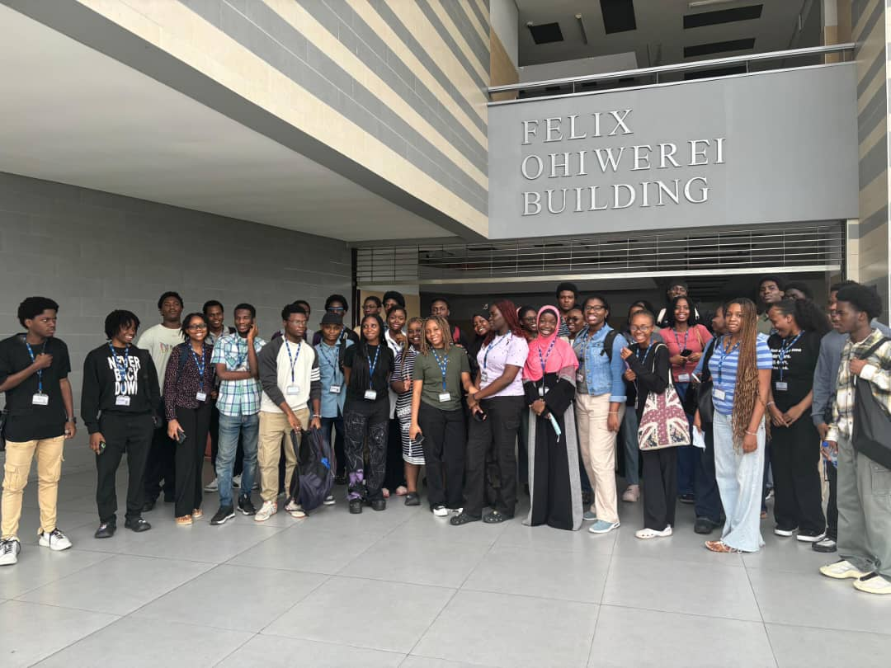
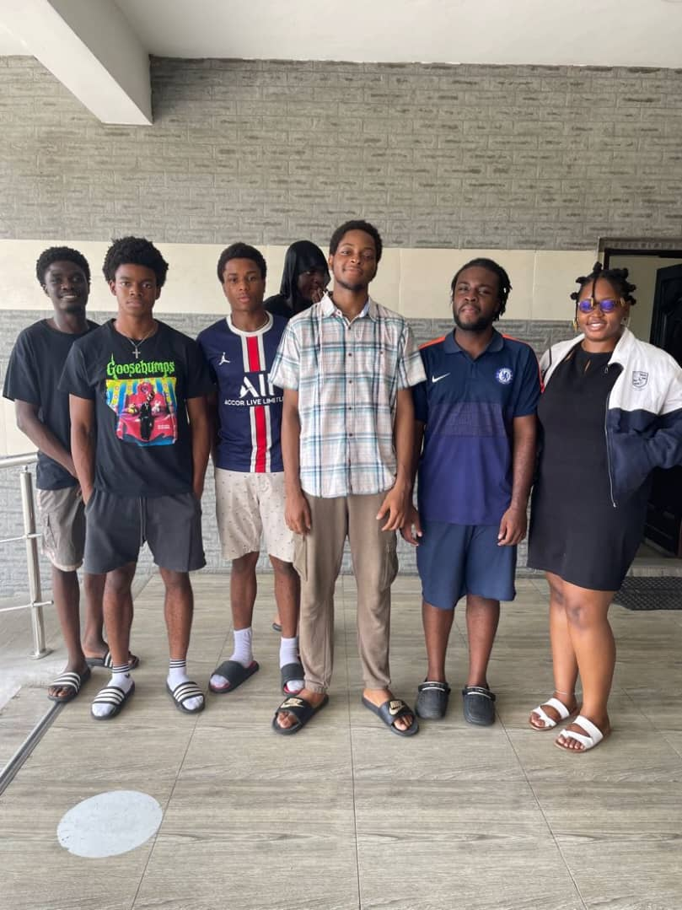
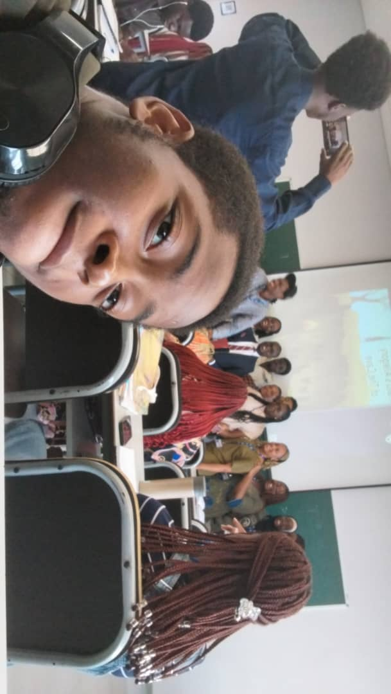

Passionate and hardworking individual able to adapt and quickly learn new concepts. I am able to function effectively individually and with teams while providing and receiving feedback. Driven by an insatiable curiosity and an unwavering determination, I delve deep into the intricacies of my craft.
Skills
HTML 90%
CSS 90%
JavaScript 65%
Express and Node. 50%
Python programming language. 80%
Rust Programming Language. 60%
C++ programming language. 70%
C# programming Language. 70%
Blender 3D Modelling. 80%
Microsoft Office Matery. 86%
Effective team collaboration. 80%
Problem solving and analytical skills. 80%
Charismatic and clear communication. 82%
Extremely quick learner. 85%
×

Education
Pan Atlantic University (Bachelor’s Degree in Computer Science) (2022-2026)
• Currently undertaking a Bachelor’s Degree in Computer Science.
Murtala Muhammed Airport school Ikeja (2014-2022)
• Graduated from MMAS as the Head Prefect after completing my study of the sciences.
Certification
Machine Learning Algorithms (2024).
• took part in a short Machine Learning course Issued by Simplilearn.
• Industry Readiness Program (2023) and (2024).
• Undertook a program to prepare individuals to contribute appropriately to their respective industries Issued by PAU.
Experience
FEDERAL AIRPORTS AUTHORITY (TECH INTERN) (2021)
• Informed the supervisor to provide daily tasks and updates, ensuring clarity on responsibilities and expectations for day-to-day activities, and facilitating a structured workflow.
• Provided support during inspections of airport power generators by assisting with equipment checks, documenting findings, and ensuring compliance with operational and safety standards.
• Conducted routine inspections of airport fuel and fire trucks, ensuring proper functionality, safety compliance, and readiness for operational use. Documented findings and reported any maintenance or repair needs.
BLUE TAG TECHNOLOGIES (TECH INTERN) (2024)
• Collaborated with the supervisor and colleagues on web development projects, contributing to designing, coding, and troubleshooting to achieve project objectives efficiently.
• Supported inspections of airport power generators by performing equipment checks, recording inspection data, and verifying adherence to operational and safety regulations. Assisted in identifying and addressing any issues to maintain optimal generator performance.
• Performed regular inspections of airport fuel and fire trucks to verify operational readiness, ensure compliance with safety standards, and maintain functionality. Recorded inspection results, identified potential issues, and reported required maintenance or repairs to relevant teams.
Projects
• Launched a wiki website for the animated movie Across the Spider-Verse
• Launched a CRUD web application with, user and admin logins, using the C# programming language.
• Designed a website for a startup company OrbytPay.
• Created a 3d layout for the storage area of an automobile repair company using blender.
Some Images of Myself and Friends Within PAU


